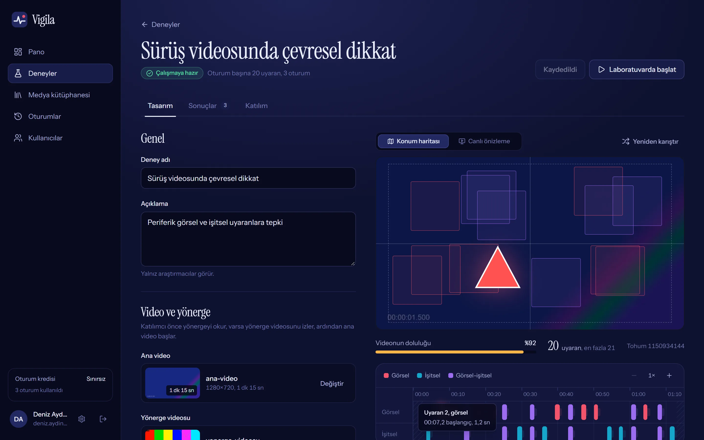
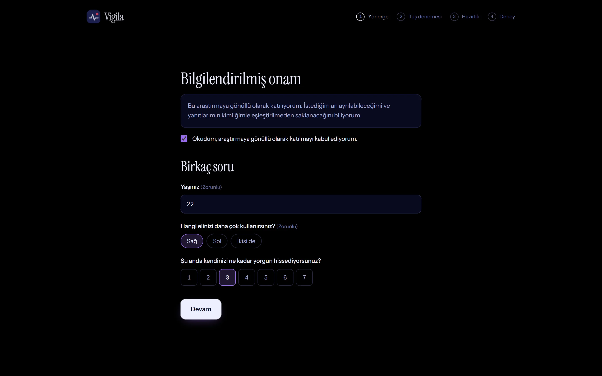
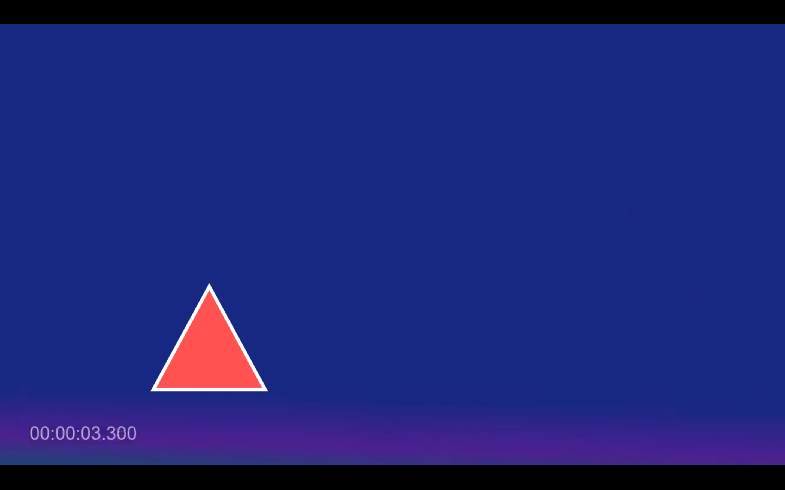
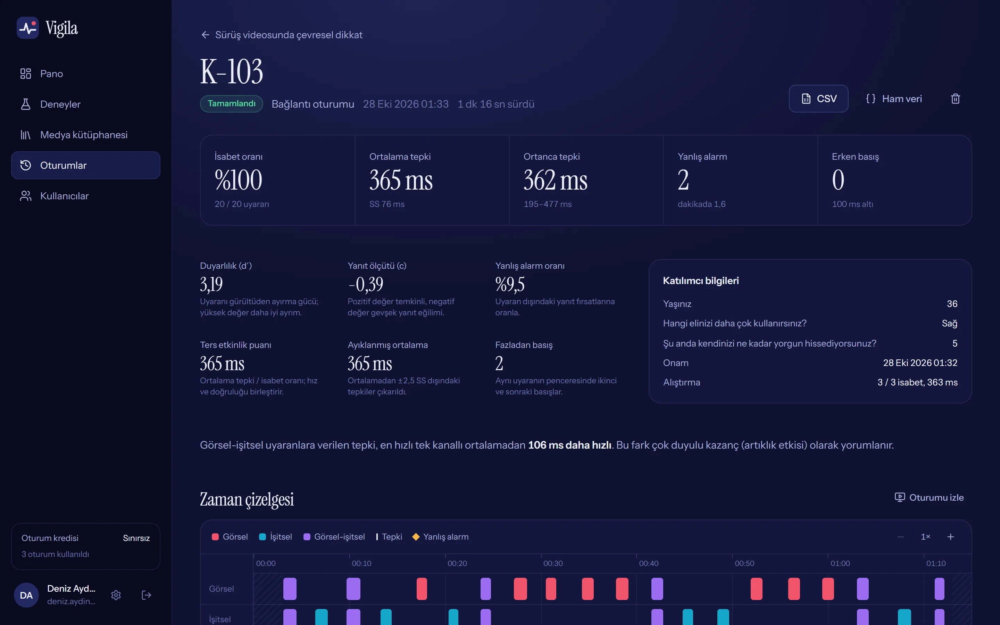
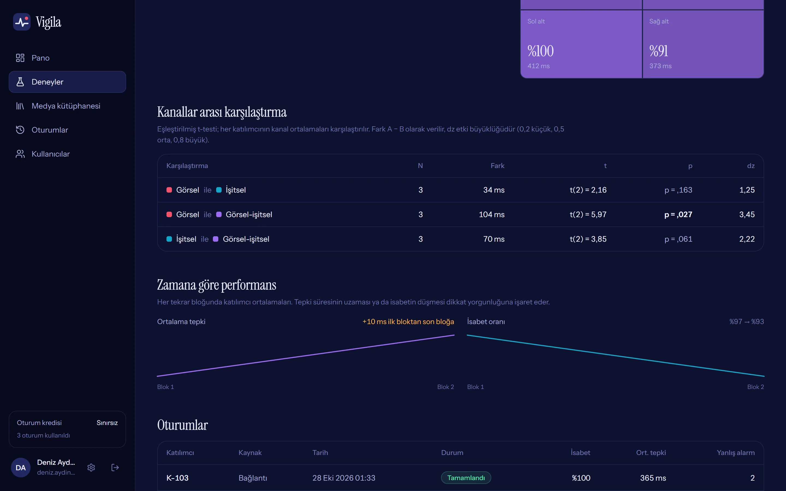

Video izlerken verilen tepkiyi milisaniyesiyle ölçün.
Vigila, görsel ve işitsel uyaranları bir videonun üzerine yerleştirip katılımcının tepki süresini kaydeden açık kaynaklı bir deney platformu. Deneyi tarayıcıda tasarlayın, bağlantıyla ya da laboratuvarda yürütün, sonuçları oturum biter bitmez inceleyin.
Bir deney, üç adım
-
1
Tasarlayın
Videoyu, görselleri ve sesleri kütüphaneden seçin. Tekrar sayısını, gösterim süresini, yanıt penceresini ve yerleşimi belirleyin. Plan her değişiklikte sunucuda yeniden üretilir; konum haritasında ve zaman çizelgesinde anında görünür. Uyaranlar ve yanıt pencereleri hiçbir zaman çakışmaz.

-
2
Yürütün
Katılımcı onam verir, kısa soruları yanıtlar, yanıt tuşunu dener ve geri bildirimli bir alıştırma yapar. Video ve uyaranlar önceden indirilir; deney tam ekranda, takılmadan akar. Katılımcılar bağlantıyı kendi bilgisayarlarında açar, laboratuvarda ise masaüstü istemcisi kullanılır.


-
3
Analiz edin
İsabet, tepki süresi, duyarlılık (d′), yanlış alarm, kanal ve ekran çeyreği kırılımı, zamanla dikkat düşüşü ve kanallar arası eşleştirilmiş t-testi oturum biter bitmez hesaplanır. Deneme düzeyindeki veri R, SPSS ve Python için CSV olarak iner.


Zamanlama, ağdan ve ekran çiziminden bağımsız
Tepki süresi katılımcının tarayıcısında, tek bir saatle ölçülür:
- Görsel
- Uyaran, video karesiyle aynı ekran yenilemesinde görünür. Kaydedilen an, o karenin ekrana geleceği andır.
- Ses
- Önceden çözülür ve ses kartının çıkış gecikmesi hesaba katılarak, görselin belireceği kareye hizalı biçimde önceden zamanlanır.
- Yanıt
- Klavye ya da dokunma olayının kendi zaman damgası. Basılı tutulan tuşun tekrarları sayılmaz.
Görsel uyaranda ölçülen tepki ile gerçek tepki arasındaki ortalama fark. Standart sapma 4,5 ms.
Görsel-işitsel uyaranda sesle görüntü arasındaki ortalama fark.
Plandan sapma: görsel, başlangıç anını geçen ilk video karesinde belirir.
Ölçüm ortamındaki ses çıkış gecikmesi; kayıtta otomatik olarak düzeltildi.
Ölçüm ortamı: başsız Microsoft Edge, 30 kare/sn video, uyaranı sayfadan ve ses çıkışından algılayıp bilinen gecikmeyle yanıt veren üç sanal katılımcı, toplam 60 deneme. Gerçek cihazlarda değerler ekran yenileme hızına ve ses donanımına göre değişir; her oturum kendi zamanlama kalitesini kaydeder ve sapma yüksekse araştırmacıyı uyarır.
Neler yapılabilir
Araştırma akışı
- Onam metni ve katılımcı formu, hazır demografik sorular
- Geri bildirimli alıştırma bloğu
- Klavye, dokunma ya da fareyle yanıt
- Türkçe ve İngilizce katılımcı ekranları
- Yönerge videosu ve cihaz uygunluk denetimi
Planlama
- Ayrı, eşleşik ya da karma görsel-işitsel sunum
- Rastgele, dengeli çeyrek ya da orta yerleşim
- Tohumla yeniden üretilebilir plan, istenirse herkese aynı plan
- Katılımcının göreceğinin aynısını oynatan canlı önizleme
Analiz
- d′, yanıt ölçütü, ters etkinlik puanı, ayıklanmış ortalama
- Kanal ve ekran çeyreği kırılımı, çok duyulu kazanç
- Zamanla performans düşüşü, kanallar arası t-testi ve etki büyüklüğü
- Oturumu yeniden izleme, uzun biçimli CSV ve ham JSON
Çevrim içi katılım
- Hesap gerektirmeyen paylaşılabilir bağlantı
- Katılımcı sınırı, son tarih, tekrar katılım engeli
- Adresten katılımcı kodu, bitişte anket platformuna yönlendirme
- Gönderilemeyen sonuç cihazda saklanır, sonra gönderilir
İşletim
- Canlı oturum izleme
- Sunucuda düşülen oturum kredileri, roller
- Veritabanı, medya ve anahtarlarla tam yedek
- İmzalı medya adresleri, hız sınırlama, parola özeti
İndir
Katılımcıların bir şey indirmesi gerekmez; bağlantıyı tarayıcıda açmaları yeterli. Sunucuyu bir kez kurun, laboratuvar bilgisayarlarına isterseniz istemciyi ekleyin.
Sunucu, Windows
Deneyleri tasarladığınız ve verilerin toplandığı web sunucusu. .NET kurulumu gerektirmez; zip'i açıp başlatın.
Sunucu, Linux
Aynı sunucu; Ubuntu, Debian ve benzeri dağıtımlar için. sh vigila.sh ile başlar.
Laboratuvar istemcisi
Laboratuvar bilgisayarında Vigila'yı tarayıcı çubuğu olmadan, kesintisiz tam ekran açar; ekranın uyumasını, yanlışlıkla yenilemeyi ve geri gitmeyi engeller.
Örnek deney paketi
Hemen denemek için bir video, dört saydam görsel ve üç kısa ses; önerilen ayarlarla birlikte.
Kaynak kod
ASP.NET Core 10, EF Core, React 19, TypeScript. Testler ve paketleme betikleriyle birlikte.
Dosyaları doğrulamak için SHA-256 özetleri. Laboratuvar istemcisi imzasız olduğundan Windows SmartScreen ilk açılışta uyarı gösterebilir; “Ek bilgi” ve “Yine de çalıştır” ile devam edin.
Beş dakikada ilk deney
-
Sunucuyu başlatın
Zip'i açıp
Vigila-Baslat.cmddosyasını çift tıklayın. Linux'ta klasörün içinde:sh vigila.sh -
Yönetici hesabını açın
Tarayıcıda
http://localhost:5317adresini açın. İlk hesap yöneticidir; araştırmacıları ve kredilerini buradan eklersiniz. -
Örnek paketi yükleyin
Paketteki dosyaları Medya kütüphanesine sürükleyin, yeni bir deney oluşturun ve Katılım sekmesinden bağlantıyı paylaşın.